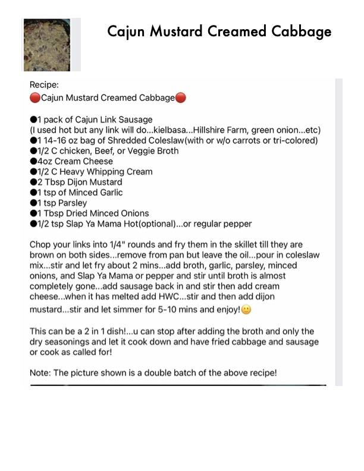

Cajun Mustard Creamed Cabbage

Original cookbook page 119
A versatile recipe that can be made as a 2-in-1 dish — you can stop after adding the broth and dry seasonings to make fried cabbage and sausage, or continue with the full recipe for the creamed version. The picture shown is a double batch of the recipe.
Ingredients
- 1 pack of Cajun Link Sausage (hot recommended, but any link will do — kielbasa, Hillshire Farm, green onion, etc.)
- 1 14–16 oz bag of Shredded Coleslaw (with or without carrots or tri-colored)
- 1/2 C chicken, beef, or veggie broth
- 4 oz Cream Cheese
- 1/2 C Heavy Whipping Cream
- 2 Tbsp Dijon Mustard
- 1 tsp of Minced Garlic
- 1 tsp Parsley
- 1 Tbsp Dried Minced Onions
- 1/2 tsp Slap Ya Mama Hot (optional)...or regular pepper
Instructions
- Chop your links into 1/4" rounds and fry them in the skillet till they are brown on both sides
- Remove sausage from pan but leave the oil
- Pour in coleslaw mix, stir and let fry about 2 mins
- Add broth, garlic, parsley, minced onions, and Slap Ya Mama or pepper and stir until broth is almost completely gone
- Add sausage back in and stir
- Then add cream cheese; when it has melted, add Heavy Whipping Cream and stir
- Then add Dijon mustard, stir and let simmer for 5–10 mins and enjoy!
Recipe #119 from collection